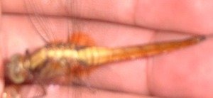
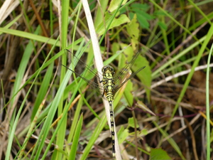

kalabilabi  
/kalabilabi/
n.
“dragonfly”
1.
n.
Anisoptera_spp._Zygoptera_spp.
dragonfly; damselfly
Egkeupian a ne egpandakep te kalabilabi dengan te batè e pad.
I want to catch a dragonfly, long ago during my childhood.
Wrd.Gloss: dragonfly
Cult. These are white with a short body and are edible. Usually they are roasted inside bamboo (damuluwan).
Eng. dragonfly; damselfly
Tag. tutubí
Ceb. alindanaw; handanaw
Ilo.: tawato
OCM: Fauna (136)
DDP: Insect (1.6.1.7)
Online dict status: -
Usage level: M
2.
n.
insect
Data Qual: Aurilio only
Eng. insect variety
Tag. kulisap
OCM: Fauna (136)
DDP: Insect (1.6.1.7)
Online dict status: -
Usage level: R
Updated by: RJH,AAA,QDL,NJK
Last updated: 13/Oct/2009
"kalabilabi" in reader "Nekey-a kag layang?"
This page last updated: 19/May/2012
Copyright © 2009-2010, Matigsalug Language Christian Association, Inc